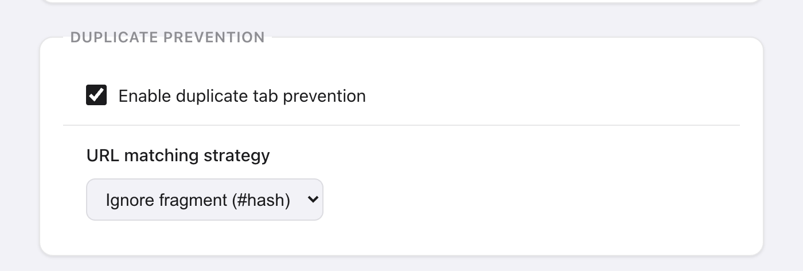

En bref : installez Takt. La prévention des doublons est activée par défaut et gratuite. Ouvrez un lien déjà ouvert dans un autre onglet, et vous arrivez sur l'onglet existant.
- 5 stratégies de correspondance d'URL déterminent ce qui compte comme « la même page ». Par défaut, le
#fragmentest ignoré. - Vous voulez quand même le doublon ? Faites un clic droit sur le lien, ou cliquez sur Ouvrir quand même.
- Fermer les doublons fait le ménage dans la fenêtre actuelle en un clic.
Pourquoi Chrome ouvre-t-il des onglets en double ?
Chrome traite chaque nouvel onglet comme une requête distincte. Il ne vérifie jamais si la page est déjà ouverte. Le même tableau de bord, le même ticket ou le même document s'accumulent donc au fil des liens reçus par e-mail, par messagerie ou dans les résultats de recherche.
Chaque copie est une page complète qui continue de tourner. Pour la fermer à la main, il faut d'abord la retrouver.
Que se passe-t-il quand Takt bloque un doublon ?
- Vous ouvrez un lien vers une page déjà ouverte dans un autre onglet.
- Takt ferme le nouvel onglet.
- Il vous amène sur l'onglet existant, quelle que soit sa fenêtre.
- Le popup affiche « Doublon évité » avec un bouton Ouvrir quand même pendant 10 secondes.
Si vous avez accordé à Takt la permission facultative « Accès à tous les sites web », une notification apparaît aussi dans la page : « Takt a détecté une URL en double et a basculé vers cet onglet », avec Ignorer et Ouvrir quand même.
La vérification fonctionne dans tous les modes de regroupement : Par règles, Par catégorie, Par IA et Aucun. Elle ne regarde les onglets qu'à leur ouverture. Faire naviguer un onglet existant vers une page ouverte ailleurs ne la déclenche pas.

Qu'est-ce qui compte comme une même URL ?
D'abord, Takt normalise chaque URL de la même façon. Il retire www., supprime la barre oblique finale et décode l'encodage pourcentage sans incidence, comme %41 en A. Ainsi, https://www.example.com/docs/ et https://example.com/docs sont la même page.
Ensuite, votre stratégie de correspondance détermine le niveau de rigueur. Choisissez-la dans Options → Settings → Duplicate Prevention.
| Stratégie | Compare | Considérés comme identiques |
|---|---|---|
| Exact URL | Tout, avec les paramètres de requête triés | ?a=1&b=2 et ?b=2&a=1 |
| Ignore fragment (#hash) Par défaut | Tout sauf le #fragment | /page#top et /page#bottom |
| Ignore query string | Schéma, hôte et chemin | /page?ref=mail et /page?ref=chat |
| Ignore query + fragment | Schéma, hôte et chemin | Comme ci-dessus |
| Origin + path only | Schéma, hôte et chemin | Comme ci-dessus |
Dans la version actuelle, les trois dernières comparent les URL de la même façon. Choisissez l'une d'elles si vous voulez ignorer les paramètres de suivi.
Prudence avec les stratégies souples sur les pages de recherche et les applications web. /search?q=chairs et /search?q=tables ont le même chemin : en ignorant la requête, elles sont traitées comme une seule page.

Comment ouvrir volontairement un doublon ?
- Faites un clic droit sur le lien et choisissez Ouvrir dans un nouvel onglet (autoriser le doublon). Cela fonctionne sur n'importe quelle page.
- Cliquez sur Ouvrir quand même dans la notification de la page ou dans le popup, juste après un blocage.
- Faites Shift+clic sur le lien, en mode Par règles, sur les pages auxquelles Takt a accès.
Ou décochez Enable duplicate tab prevention dans Settings pour désactiver complètement la fonctionnalité.
Comment fermer les onglets en double déjà ouverts ?
Cliquez sur Fermer les doublons dans le volet Accueil du popup. Takt analyse la fenêtre actuelle avec votre stratégie de correspondance et garde le premier onglet de chaque page, en partant de la gauche. Les autres se ferment aussitôt, sans confirmation, et le popup indique combien ont été fermés. Le bouton est grisé quand il n'y a rien à fermer.
Un site peut-il utiliser une stratégie différente ?
Oui, en mode Par règles. Ouvrez une règle, cochez Prevent duplicate tabs in this group, et choisissez une stratégie de correspondance d'URL pour les onglets de cette règle.
C'est utile pour une application monopage où chaque #fragment est une vue différente : réglez cette règle sur Exact URL et gardez la valeur par défaut globale pour tout le reste. L'interrupteur général reste prioritaire. Désactivé, il ne bloque aucun onglet, même dans une règle dont la case est cochée.
Comment cela se compare-t-il aux autres solutions ?
| Chrome seul | Bloqueur à usage unique | Takt | |
|---|---|---|---|
| Bloque les doublons à l'ouverture | Non | Oui | Oui, activé par défaut |
| Choisir ce qui compte comme une même page | Non | Variable | 5 stratégies, également par règle |
| Fermer les doublons existants | Non | Variable | Un clic, fenêtre actuelle |
| Regroupe et met aussi les onglets en hibernation | Non | Non | Oui |
Vérifiez qu'une extension à usage unique est toujours maintenue. Duplicate Tabs Preventor, par exemple, n'est plus maintenue depuis avril 2026.
Ce que la prévention des doublons ne fait pas
- Elle ne fusionne pas les onglets déjà ouverts avant l'installation de Takt. Utilisez Fermer les doublons pour ceux-là.
- Fermer les doublons ne fonctionne que dans la fenêtre actuelle.
- La notification dans la page et le Shift+clic nécessitent la permission facultative d'accès aux pages. Le bandeau du popup et l'option du clic droit, non.
Cliquez deux fois sur le même lien. Vous retrouvez l'onglet que vous aviez déjà.
Ajouter Takt à Chrome, gratuitementQuestions fréquentes
Chrome peut-il empêcher les onglets en double tout seul ?
Non. Chrome n'a aucun réglage pour bloquer les onglets en double : il faut une extension.
La prévention des doublons de Takt est-elle gratuite ?
Oui. La prévention, les cinq stratégies et Fermer les doublons sont gratuits, sans limite.
Comment ouvrir volontairement un onglet en double ?
Faites un clic droit sur le lien et choisissez Ouvrir dans un nouvel onglet (autoriser le doublon), ou cliquez sur Ouvrir quand même après un blocage.
Est-ce que ça fonctionne dans tous les modes de regroupement ?
Oui : Par règles, Par catégorie, Par IA et Aucun.